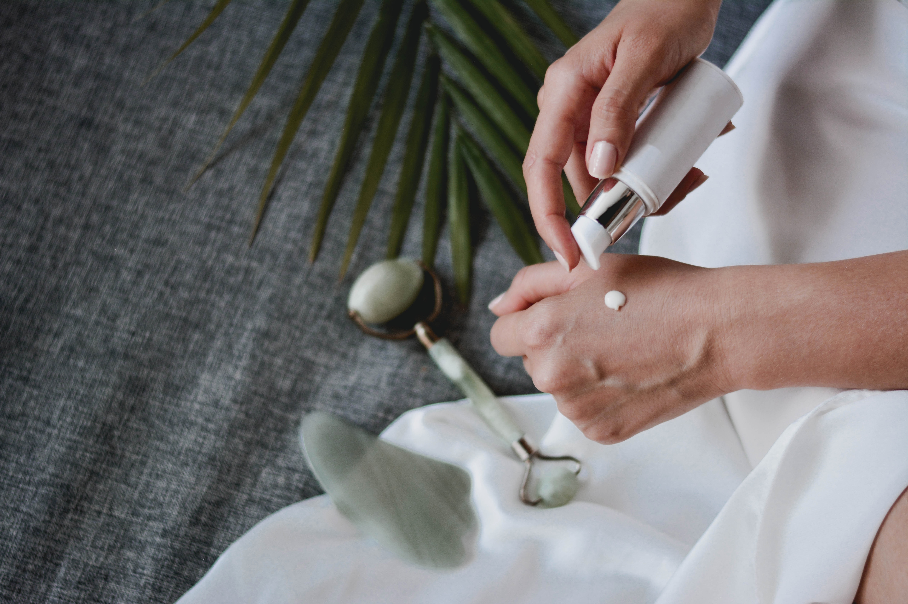
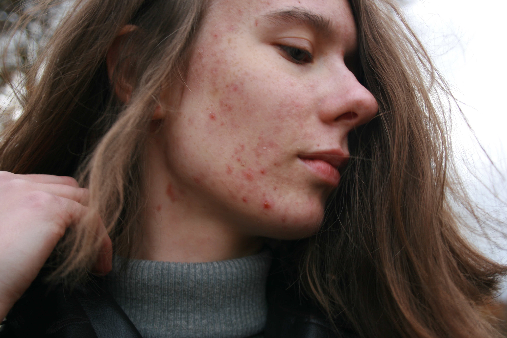
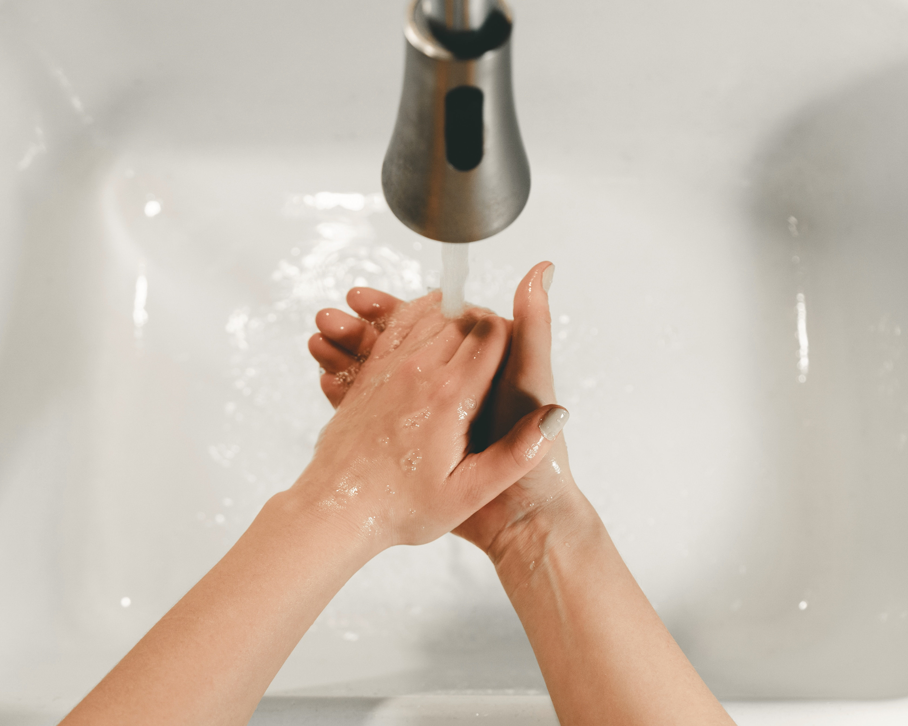
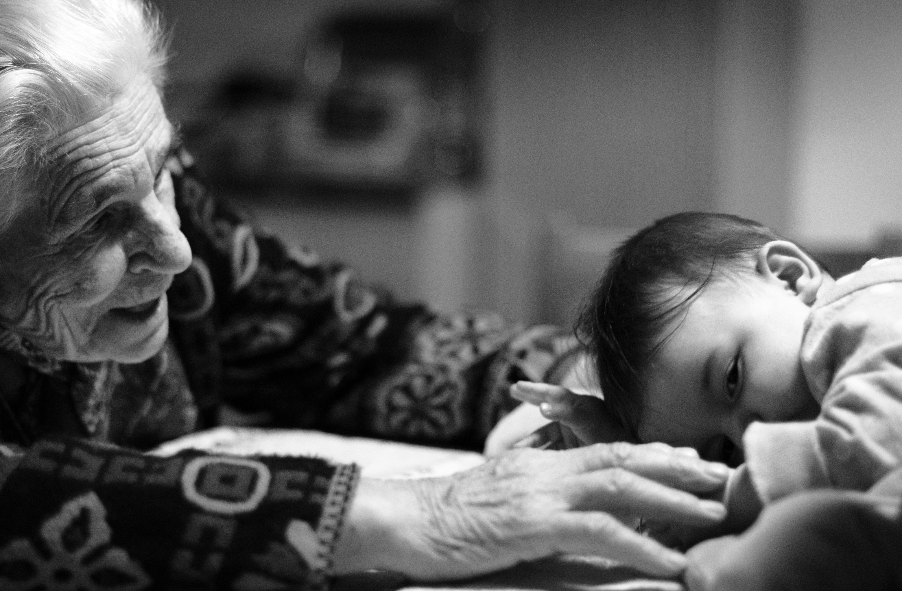
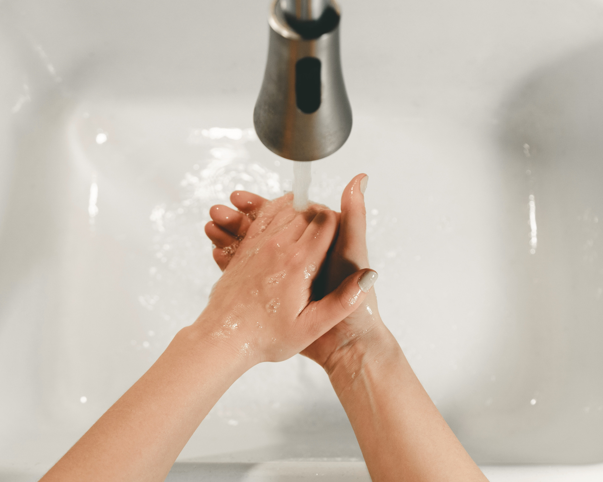

Naše tělo nám slouží a naoplátku se musíme starat my o něj, součátí je i péče o naši pleť
1. INSIDE OUT
Často je zevnějšek odrazem našeho nitra, proto je pro zdraví naší kůže kvalita stravy stejně důležitá, jako externí péče.
Hlavní roli hraje mikrobiom a hormonální rovnováha. Hlavně během puberty je tělo náchylné k hormonálním výkyvům a tudíž jsou kožní problémy typu akné
nejčastěji spojovanány s touto životní etapou.

2. UMYJ SI RUCE!
Mytí rukou nejen jako obsesivní trend z doby covidové.
Základní hygiena pravidelného mytí rukou, návyk, který si někteří osvojili, bohužel, až v době pandemie.
Jde o jakýsi pilíř péče o pleť. Kůže obličeje je výrazně tenčí než na jiných místech na těle, tedy i citlivější a vyžadující větší péči. Ruce na drohou stranu jsou
v tomto ohledu mnohem odolnější, zároveň jsou rájem pro všechny možné bakterie.
Kliky, madla v hromadné dopravě, mobilní zařízení, již několikrát zkoušené oblečení v obchodě a další. Toho všeho se naše ruce dotýkají a žádné bakterie z těchto
věcí určitě nechceme na našem obličeji.
Pokaždé, než si sáhneš na obličej se ujisti, že jsou tvé ruce čisté.

3. FRENEMY LÉTA - SLUNCE
Slunce. Zdroj nezbytného vitamínu D3.
Tak ho všichni známe, známe však také odvrácenou stranu slunce?
Slunce je zároveň nejčastější příčinnou
poškození pokožky, jež není dostatečně chráněna. Nejlepší možností projevu škody na kůži je hyperpigmentace, v nejhorším rakovina kůže.
Statisticky stačí 5 spálení pokožky na slunci před dovršením osmnáctého roku života a pravděpodobnost rakoviny kůže se zvyšuje na 50%. Opalovací krémy
mají všechna možné úrovně SPF, naše doporučení je SPF 50 a minimálně dvě aplikace denně. Zda je pro Vaši pleť lepší chemický nebo minerální opalovací krém záleží
na Vašem typu pleti.

4. ZÁLEŽÍ NA VĚKU?
Věk je téma rozebírané v mnoha odvětvích, rozdíly, které s ním přichází jsou nedílnou součástí této problematiky. Je nutné zmiňovat věk i když jde o péči o pleť?
Odpovědí je ANO, je to nutné.
To však není vůbec špatná věc. V každé etapě našeho života se potřeby našeho těla i kůže liší. Zatímco v pubertě často bojujeme spíše
s pletí problematickou či aknózní, tak s roustoucími čísly na narozeninovém dortu se tento fakt mění a přikláníme se spíše k péči hydratační, vyživující nebo i protivráskové.
Stárnutí je věc krásná, je to známka toho, že jsme svůj život opravdu žili a není lepší cesty, jak se naší pokožce, jež dělá vše pro naši ochranu, odměnit než-li se o ni starat a
poskytnout jí vše, co by mohla potřebovat.

5. CELEBRITY NEJSOU REAL
Doba sociálních sítí, selfíček a hlavně photoshopu.
Photoshopu a kosmetických zákroků.
Fotky z červeného koberce jsou vše, jen ne realita a nelze je brát jako cokoliv reálného.
Začíná to plánovanými paparazzi, kdy se celebrita ujistí, že vypadá dobře, než ji někdo vyfotí, pokračuje to například cenově dostupnějšmi nebo dokonce neplacenými vizuálními,
chirurgickými, úpravami. Je nutné si uvědomit, že pro většinu celebrit je jeich zevnějšek to, co je živí a je tedy naprosto přirozené, že do svého vzhleu budou investovat více
času, peněz i energie než normální smrtelník.
A stejně se jednou za čas na plátcích bulváru objeví nelichotivé fotky, jelikož na konci dne jsou celibrity také jen lidé a jsou vše,
jen ne perfektní.
Základní hygiena pravidelného mytí rukou, návyk, který si někteří osvojili, bohužel, až v době pandemie. Jde o jakýsi pilíř péče o pleť. Kůže obličeje je výrazně tenčí než na jiných místech na těle, tedy i citlivější a vyžadující větší péči. Ruce na drohou stranu jsou v tomto ohledu mnohem odolnější, zároveň jsou rájem pro všechny možné bakterie. Kliky, madla v hromadné dopravě, mobilní zařízení, již několikrát zkoušené oblečení v obchodě a další. Toho všeho se naše ruce dotýkají a žádné bakterie z těchto věcí určitě nechceme na našem obličeji.
Pokaždé, než si sáhneš na obličej se ujisti, že jsou tvé ruce čisté.

Tak ho všichni známe, známe však také odvrácenou stranu slunce?
Slunce je zároveň nejčastější příčinnou poškození pokožky, jež není dostatečně chráněna. Nejlepší možností projevu škody na kůži je hyperpigmentace, v nejhorším rakovina kůže. Statisticky stačí 5 spálení pokožky na slunci před dovršením osmnáctého roku života a pravděpodobnost rakoviny kůže se zvyšuje na 50%. Opalovací krémy mají všechna možné úrovně SPF, naše doporučení je SPF 50 a minimálně dvě aplikace denně. Zda je pro Vaši pleť lepší chemický nebo minerální opalovací krém záleží na Vašem typu pleti.